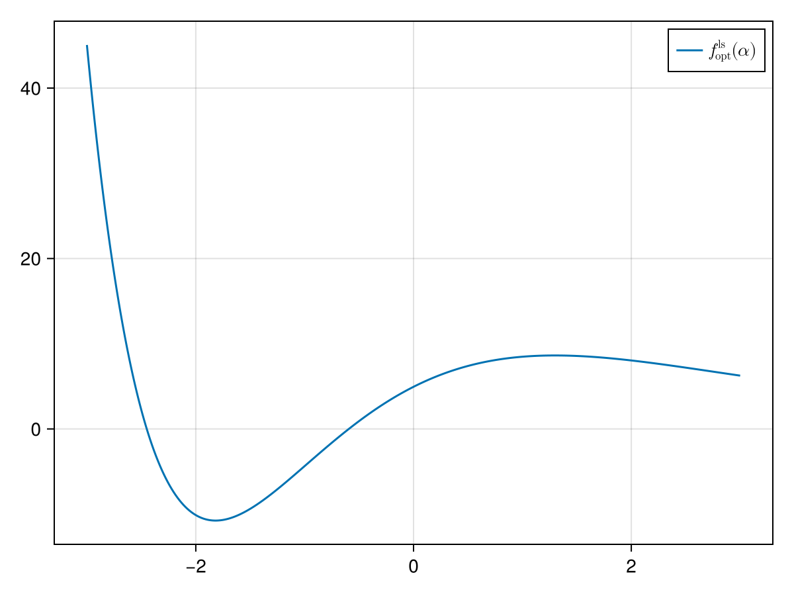
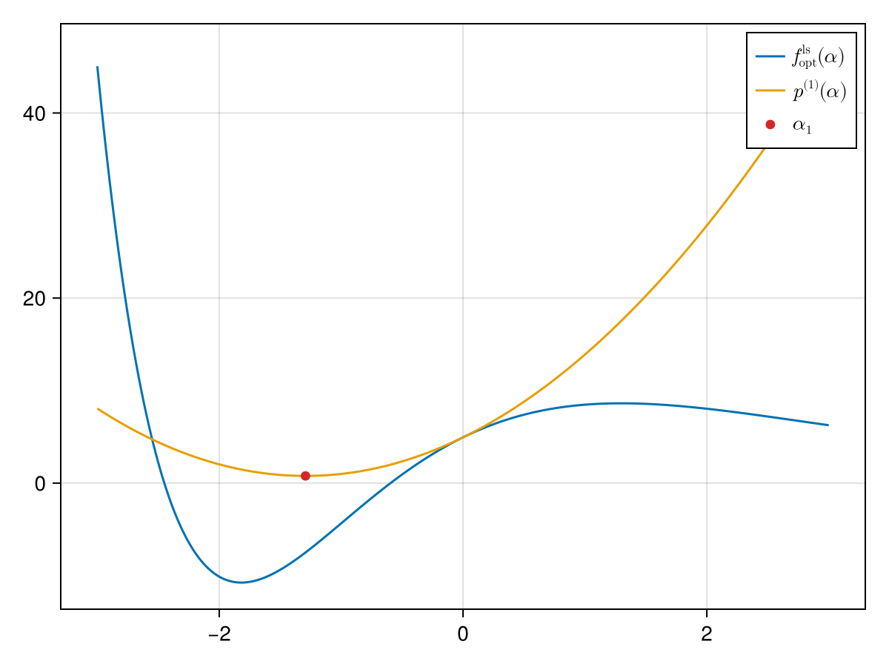

Linesearches for Optimizers
In GeometricOptimizers we typically build the search direction by multiplying the gradient with a Hessian. When starting at $x_k$ we take:
\[ p_k = H_{x_k}^{-1}(\nabla_{x_k}f),\]
where $[H_{x_k}]_{ij} = \partial^2{}f\partial{}x_i\partial{}x_j|_{x_k}$ is the Hessian. Note that we often use approximations of this Hessian in practice (such as the HessianBFGS).
The linesearch objective is then built as
\[f^\mathrm{ls}(\alpha) = f(x_k + \alpha{}p_k).\]
For manifolds [7] defining a Hessian, equivalently to defining a gradient, requires a Riemannian metric and the associated Levi-Civita connection $\nabla$:
\[\mathrm{Hess}(f) := \nabla\nabla{}f = \nabla{}df \in \Gamma(T^*\mathcal{M}\otimes{}T^*\mathcal{M}).\]
For specific vector fields $\xi, \eta \in \Gamma(T\mathcal{M})$ we can write this as:
\[\langle \mathrm{Hess}(f)[\xi], \eta \rangle = \xi(\eta{}f) - (\nabla_\xi\eta)f.\]
Example
We look at the following example:
f(x::Union{T, Vector{T}}) where {T<:Number} = exp.(x) .* (x .^ 3 .- 5x .+ 2x) .+ 2one(T)
f!(y::AbstractVector{T}, x::AbstractVector{T}) where {T} = y .= f.(x)
F!(y::AbstractVector{T}, x::AbstractVector{T}, params) where {T} = f!(y, x)F! (generic function with 1 method)We hence use linesearch_problem not for a SimpleSolvers.NewtonSolver, but for an EuclideanOptimizer:
x₀ = [0., .1, .2]
x = copy(x₀)
obj = OptimizerProblem(sum∘f, x₀)
grad = GradientAutodiff{Float64}(obj.F, length(x₀))
_cache = NewtonOptimizerCache(x₀)
state = NewtonOptimizerState(x₀)
hess = HessianAutodiff(obj, x₀)
update!(state, grad, x₀)
update!(_cache, state, grad, hess, x₀)
params = (x = state.x, )
ls_obj = linesearch_problem(obj, grad, _cache)
fˡˢ(alpha) = ls_obj.F(alpha, params)
∂fˡˢ∂α(alpha) = ls_obj.D(alpha, params)
Note the different shape of the line search problem in the case of the optimizer, especially that the line search problem can take negative values in this case!
We now again want to find the minimum with quadratic line search and repeat the procedure above:
p₀ = fˡˢ(0.)4.9464834626645615p₁ = ∂fˡˢ∂α(0.)6.452258296067367params = (x = state.x, )
α₀ = bracket_minimum_with_fixed_point(ls_obj, params, 0.)[1]
y = fˡˢ(α₀)
p₂ = (y - p₀ - p₁*α₀) / α₀^2
p(α) = p₀ + p₁ * α + p₂ * α^2
α₁ = -p₁ / (2p₂)-0.04213770599606998
We now again move the original $x$ in the Newton direction with step length $\alpha_1$:
sum∘f(x)sum ∘ [2.0, 1.6695538954953815, 1.2769295671691796]compute_new_iterate!(x, α₁, direction(_cache))3-element Vector{Float64}:
0.02106885299803499
0.12442776394771286
0.2283971496930037sum∘f(x)sum ∘ [1.935457175201534, 1.5794382691715403, 1.153970640387292]